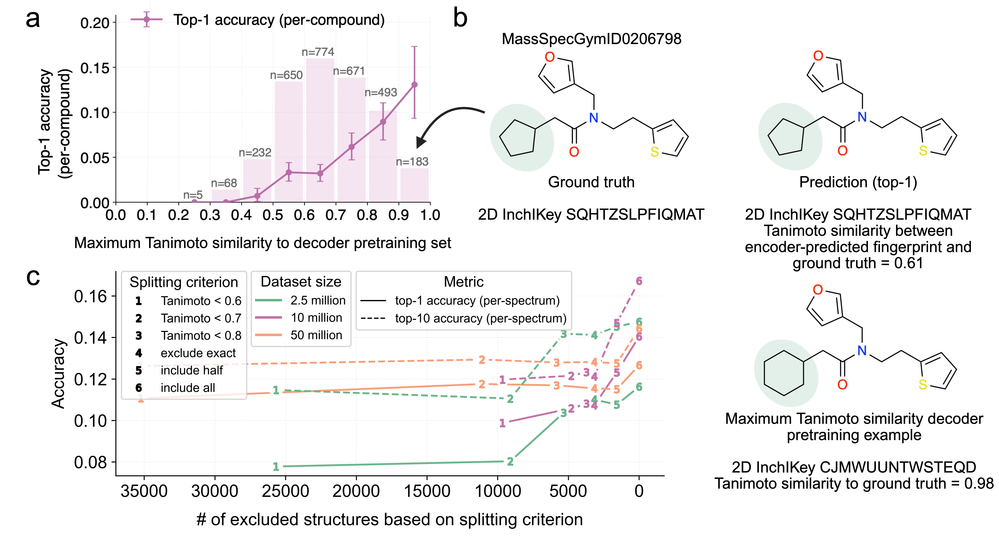
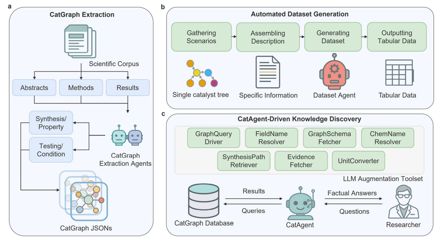
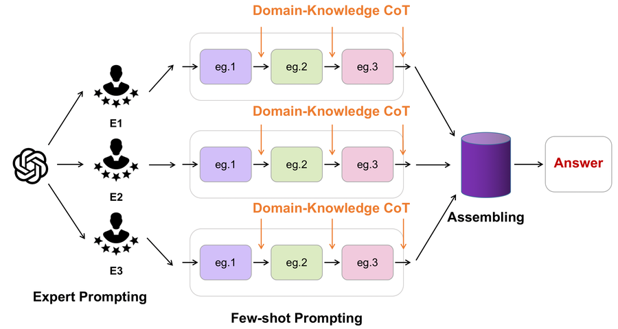
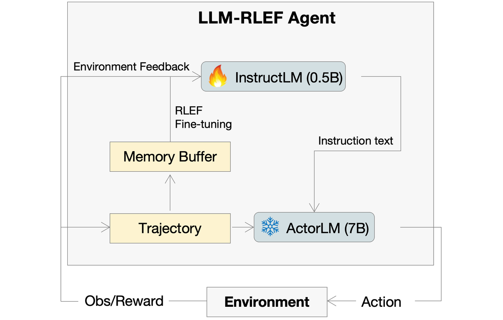
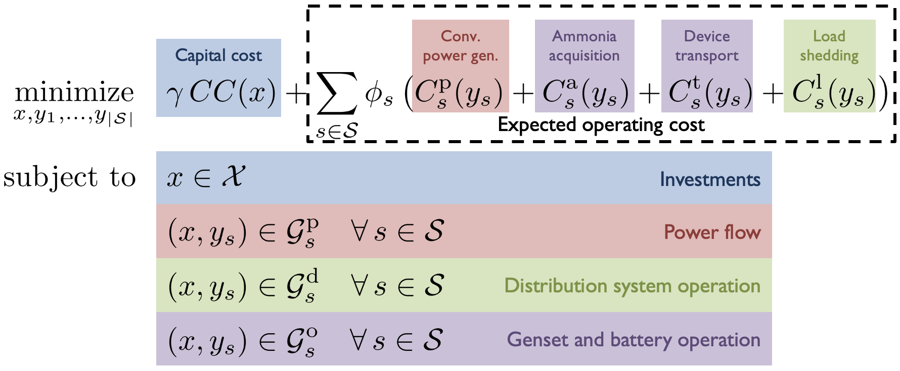

Hongxuan Liu · 刘鸿轩
Ph.D. Student · MIT
Hello! I am a first-year Ph.D. student in the Schwarzman College of Computing and the Department of Chemical Engineering at MIT, advised by Prof. Connor W. Coley. My research builds AI for scientific discovery — discrete diffusion and flow models, language models and agentic systems that reason about chemistry and the natural sciences. I currently focus on mass-spectrometry-based molecular structure elucidation, trustworthy AI for molecule discovery, and LLM post-training techniques for science.
I received my bachelor's degrees in Chemical Biology and Chemical & Biomolecular Engineering from Tsinghua University (summa cum laude), where I worked with Prof. Xiaonan Wang. I was also a visiting student with Prof. Tingting Zhu at the University of Oxford and Prof. Qi Zhang at the University of Minnesota.
Collaboration. If you would like to discuss anything related to AI for science, generative modeling, or research in general, I would be glad to hear from you — please feel free to reach out via email.
Education
-
Massachusetts Institute of Technology Sep 2025 – Present
Ph.D. in Computational Science & Engineering — Chemical Engineering
Schwarzman College of Computing & Department of Chemical Engineering. Advised by Prof. Connor W. Coley. Cambridge, MA, USA
-
Tsinghua University Sep 2021 – Jun 2025
B.S. in Chemical Biology & B.Eng. in Chemical and Biomolecular Engineering — summa cum laude
Tanwei College. Beijing, China
News
- Jul 2026 Our paper MassSpecGym in the Wild won the Best Paper Award at the ICML 2026 GenBio Workshop.
- May 2026 Our paper MassSpecGym in the Wild was selected for an Oral (Top-2%) at the ICML 2026 GenBio Workshop.
- May 2026 Our paper FRIGID: Scaling Diffusion-Based Molecular Generation from Mass Spectra was accepted to ICML 2026.
- Apr 2026 Honored to receive the Chyn Duoq Shiah Memorial Fellowship at MIT (two recipients annually across the institute).
- Nov 2025 Joined Coley Group at MIT as a Ph.D. student.
- Jun 2025 Graduated from Tsinghua University summa cum laude, and was named an Outstanding Graduate of Beijing.
Selected Publications & Manuscripts
* equal contribution-

-
-

-

-

-

Scholarships & Awards
-
Best Paper Award, ICML 2026 GenBio Workshop 2026
Top 2 out of 400+ submissions.
-
Chyn Duoq Shiah Memorial Fellowship, MIT 2026
Two recipients annually across MIT for exceptional academic achievement.
-
Outstanding Graduate of Beijing 2025
The highest graduation honor in Beijing.
-
National Scholarship of China 2024
Top 0.2% nationwide — the highest undergraduate scholarship honor in China.
-
Comprehensive Merit Scholarship of Tsinghua University 2022, 2023, 2024
Awarded for three consecutive years for outstanding academic performance.
Research Experience
-
Coley Group, MIT 2025 – Present
with Prof. Connor W. Coley
Building scalable generative and evaluation methods for MS/MS-based molecule discovery — diffusion language models for de novo structural elucidation and systematic audits of benchmark reliability.
-
Smart Systems Engineering (SSE) Group, Tsinghua University 2023 – 2025
with Prof. Xiaonan Wang
Developed CATDA-MM, a multi-modal end-to-end LLM agent that autonomously constructs knowledge graphs from catalysis literature at near-human fidelity; introduced the first concept and systematic framework for domain-knowledge-embedded prompt engineering in biochemistry.
-
Computational Health Informatics (CHI) Lab, University of Oxford 2024
with Prof. Tingting Zhu
Created RL²EF, a verifiable reward-driven post-training framework for bilevel LLM-RL agents in dynamic treatment regimes — the first application of RLVR post-training to LLMs in medical AI, reaching state-of-the-art performance on diabetes treatment.
-
Decision Discovery and Optimization (DDO) Lab, University of Minnesota 2023
with Prof. Qi Zhang
Designed large-scale stochastic mix-integer optimization for resilient power distribution networks - a modified L-shaped Bender's cut enabling HPC-friendly parallel decomposition, plus an uncertainty-and-scenario generation framework.
Reviewing
Journal Reviewer · Nature Communications
Conference Reviewer · NeurIPS, ICML, ICLR, RLC